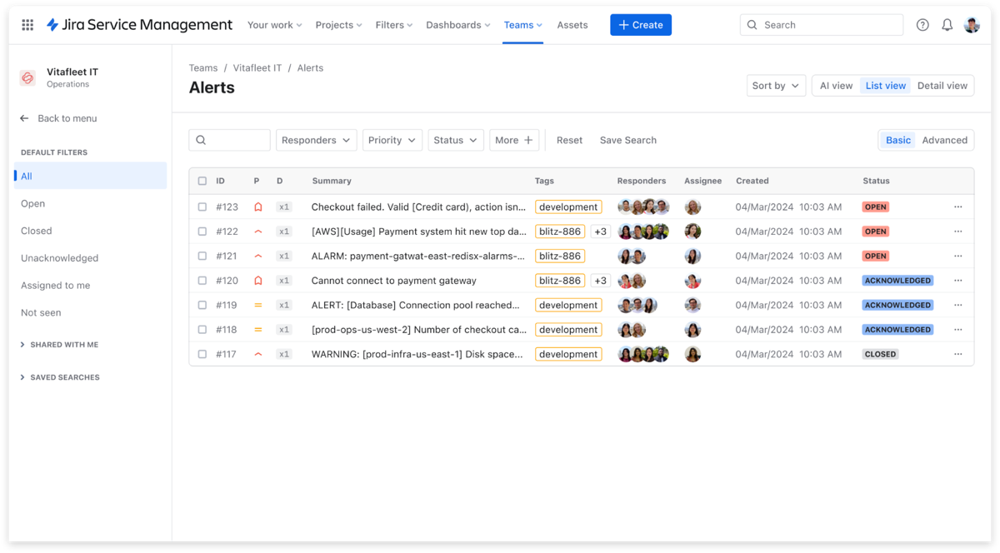
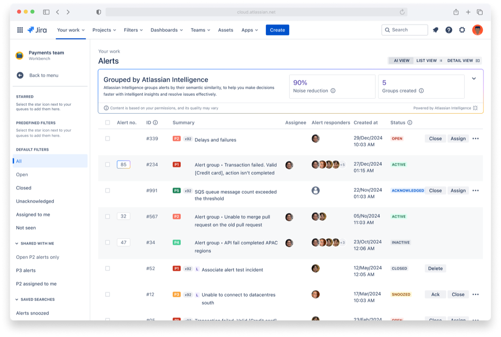
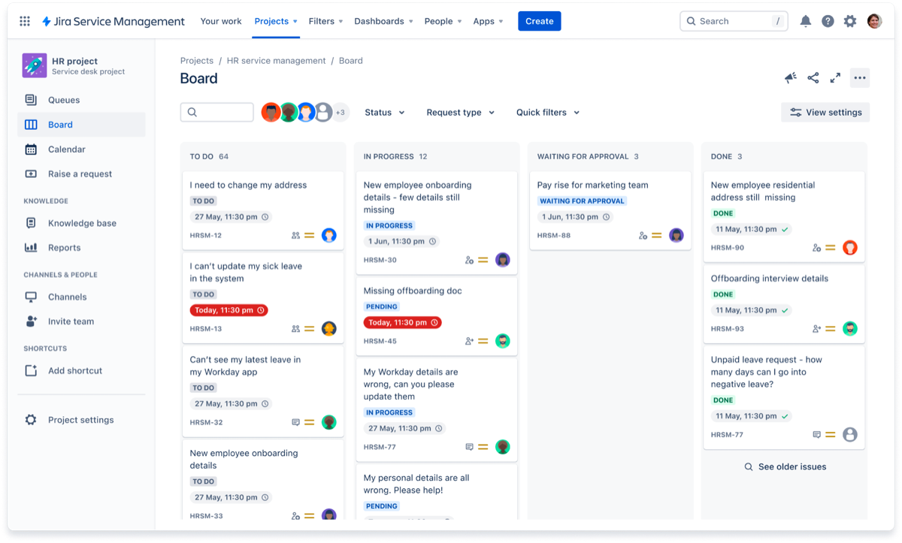
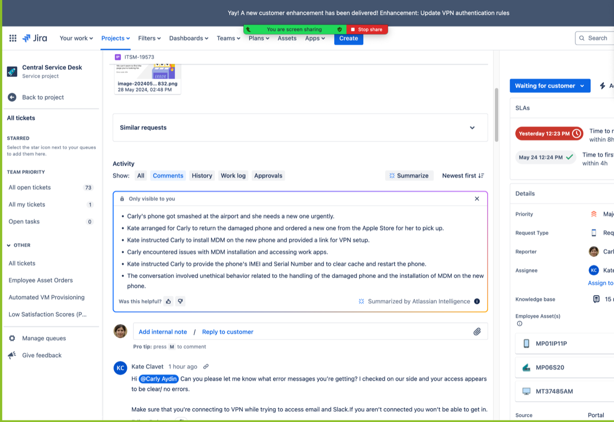
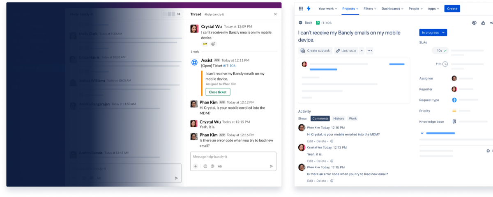
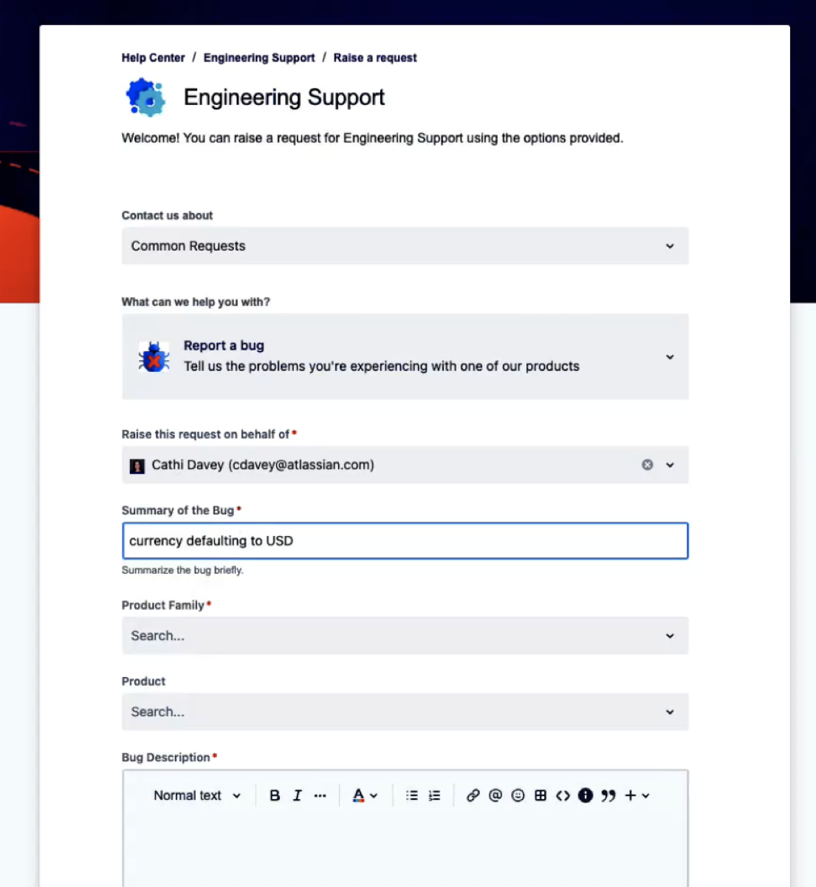
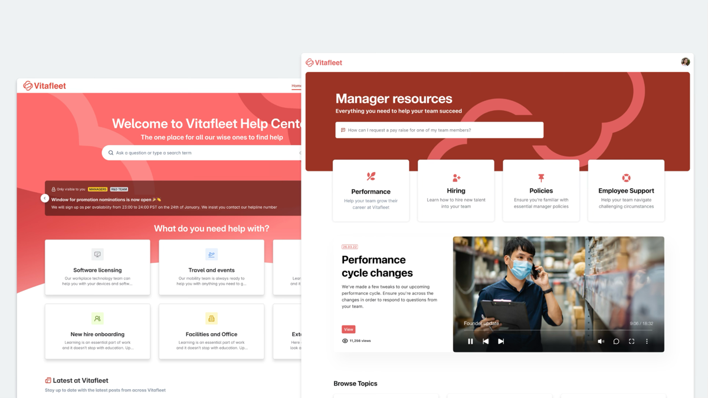

🔔
為什麼一定要現在遷移？
Opsgenie 停止支援後將無法登入，所有未遷移的資料都會被刪除。越早啟動，越能從容完成驗證、訓練與費用規劃，避免營運中斷與資料遺失。
查看關鍵時程 →Opsgenie 即將終止支援。鈦坦科技以 Atlassian 黃金級合作夥伴身分， 協助你零停機遷移到 Jira Service Management（Service Collection）或 Compass。
自 2018 年起，Atlassian 持續將 Opsgenie 的能力整合進平台與各項產品， 幫助 Dev 與 IT 團隊更順暢協作。如今你有兩條清晰的遷移路徑。
Opsgenie 停止支援後將無法登入，所有未遷移的資料都會被刪除。越早啟動，越能從容完成驗證、訓練與費用規劃，避免營運中斷與資料遺失。
查看關鍵時程 →大多數遷移只需數分鐘。Opsgenie 與 JSM／Compass 共用相同後端架構，過程不影響通知傳送或日常操作。
鈦坦科技以 Atlassian 黃金級合作夥伴身分，協助評估方案、規劃時程、處理特殊情況與費用轉換。
Atlassian 將 Jira Service Management、Customer Service Management、Assets 與 Rovo Agents 整合成單一、AI 驅動的服務管理方案。Opsgenie 遷移後的 Jira Service Management，正是 Service Collection 的核心。

核心服務管理，連結 Dev、IT 與業務團隊，提升員工體驗與服務韌性。

全新對外客服 app，以 AI 強化外部顧客支援，串起前線與業務的回饋循環。

彈性資產資料庫，追蹤、管理與視覺化關鍵資產與服務，建立相依關係。

AI 團隊夥伴，協助分流與攔截請求、解決事件並產生知識。
以上應用整合販售（不單獨銷售），共用佇列、SLA、表單與報表等服務管理技術，並建構於 Atlassian 平台（Rovo、Teamwork Graph、Automation、Analytics、Security）。
面向「組織內部」的服務（ITSM）
面向「外部顧客」的服務（CSM）
兩者共用相同的服務管理技術，並同樣建構於 Atlassian 平台之上。
由 Opsgenie 擁有者（Owner）前往 Settings > Migrate Opsgenie，系統會根據使用狀況推薦最適合的遷移路徑。
Jira Service ManagementAlerts + On-call + Incidents + 端到端 ITSM 解決方案
 Compass
CompassAlerts + On-call + 全面的內部開發者平台
同樣具備告警與 on-call，但在事件、變更、問題管理與 AI 能力上差異明顯。
| 功能類別 |  Opsgenie Opsgenie |
Jira Service Management |
Compass |
|---|---|---|---|
| 警示與輪值排班 (Alerting & on-call) | ✓ | ✓ | ✓ |
| 事件管理 (Incident) | ✓ | ✓ | ✕ |
| 變更管理 (Change) | ✕ | ✓ | ✕ |
| 問題管理 (Problem) | ✕ | ✓ | ✕ |
| AI Ops | ✕ | ✓ | ✕ |
| AI 驅動 ITSM | ✕ | ✓ | ✕ |
完整功能差異請參考 Atlassian 官方文件： Feature changes and deprecations in JSM ｜ What to expect from Opsgenie migration
遷移後你能用到的代表性功能，涵蓋 IT 維運、客戶服務、開發協作與員工體驗。以下為 Atlassian 產品實際畫面。

在 JSM 內直接檢視、分派與處理告警，不必再切換到獨立工具。

Atlassian Intelligence 自動群組相似告警、降低噪音並排定回應優先順序。

以 Queues、Board 或 Calendar 檢視組織請求，掌握相依關係與時程。

一鍵將冗長對話濃縮成重點摘要，加速客服人員上手與回應。

從 Slack 或 Microsoft Teams 直接攔截常見請求，自動建立並分派工單。

預建表單與 Help Center，讓使用者自助提交 bug 回報與服務請求。

為 HR、總務等團隊打造品牌化、個人化的員工服務中心，提升自助比率。
資料會「複製」到目標平台，既有 Opsgenie 維持原狀，雙站可並行運作，讓你安心驗證。
用來驗證所有設定是否正確運作、讓團隊逐步適應新系統，並在確認 alerting／on-call 流程正常後，再正式關閉 Opsgenie。
越早規劃，越有餘裕完成驗證、測試與使用者訓練。
讓鈦坦科技協助你評估現況、規劃時程，安心完成遷移。
依主題瀏覽 18 個最常被問到的遷移問題。
鈦坦科技（Titansoft）為 Atlassian 黃金級合作夥伴，提供遷移評估、方案規劃、費用轉換與技術協助。歡迎與我們聯繫，量身規劃你的遷移路徑。